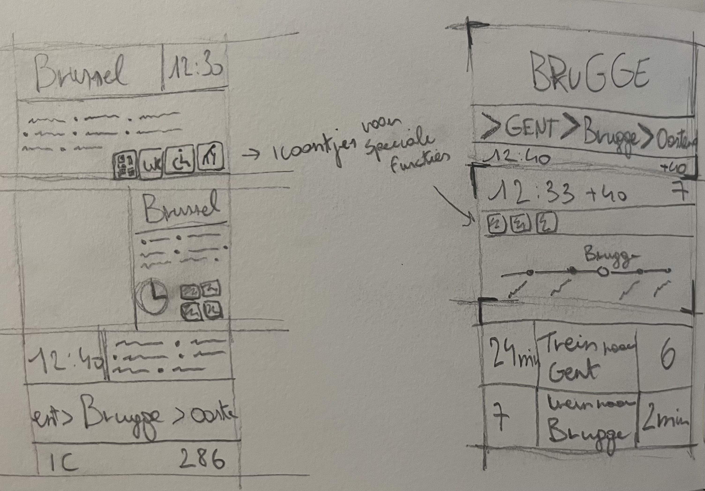

Week 3 — Low-fi prototypes
Deze week heb ik voor het eerst geschetste prototypes gemaakt. Het was moeilijk om iets nieuw uit te vinden maar dat hoeft niet altijd, efficientie was prioriteir en hier heb ik ook op gelet.
Overzicht- & Perronscherm
Voor deze borden was ik al snel tot de conclusie gekomen dat ik gebruik ging maken van een QR-dode systeem. Dit heb ik dan ineens geprobeert.

Wagonindelingborden
Voor deze borden wist ik al gelijk dat ik iconen ging gebruiken om de communicatie te versimpelen en globaler te maken zodat er minimaal vertaalt ging moeten worden.